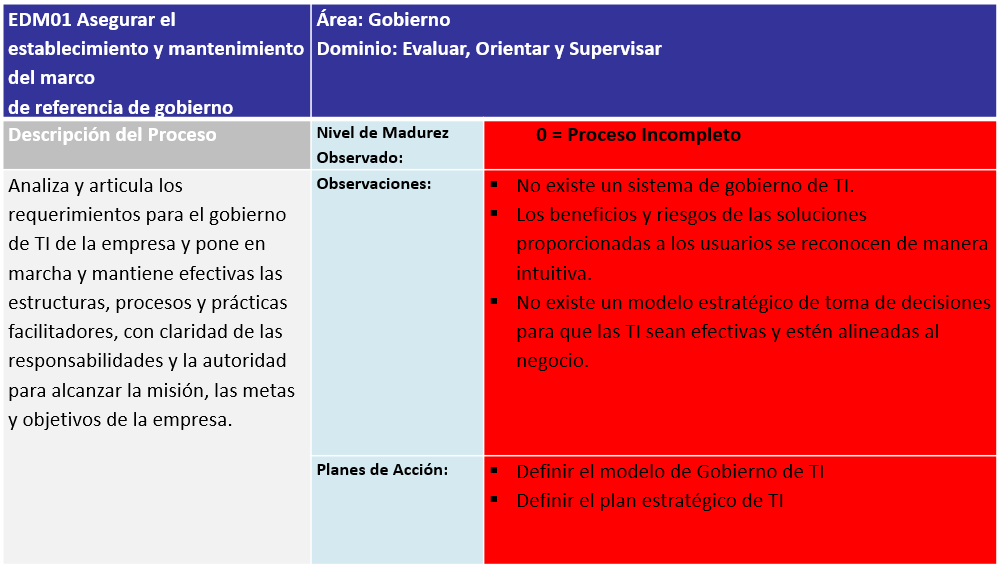

Conclusiones y Recomendaciones


Conclusiones:
- A través de la aplicación de las prácticas de cascada de metas propuesta por COBIT 5, se logró la identificación y priorización de las: Metas corporativas, metas de TI y procesos del departamento de TI, con el fin de alinearlos a los objetivos del negocio.
- Con la evaluación del nivel de capacidad de los procesos, se ha podido determinar que la mayoría de los procesos del departamento de TI son intuitivos y carecen de una definición y control formal, así también se pudo concluir que el nivel de madurez del departamento de TI es el “1 Proceso ejecutado” que significa que la mayoría de los procesos implementados en TI se ejecutan y alcanzan su propósito, sin embargo estos no están: Definidos, documentados y administrados.
Recomendaciones:
- El departamento de TI debe disponer el tiempo suficiente para: Definir, documentar, evaluar y optimizar sus procesos y de esta manera lograr un incremento del nivel de madurez de los mismos.
- Existe una necesidad de contar con una definición de prácticas y políticas para la gestión de procesos de TI.
- Fomentar la capacitación y aprendizaje en el personal de TI, sobre las metodología, marcos de trabajo, normas y estándares internacionales.
- Es importante hacer una gestión de los recursos humanos, para optimizar sus actividades, mediante documentación y automatización de sus procedimientos.
- Asegurar la colaboración entre el negocio y las TI, logrando que TI evolucione de un área de apoyo a un área estratégica para la empresa.